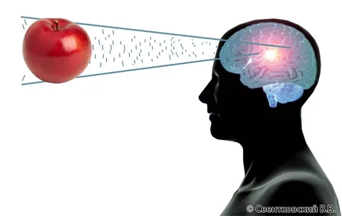
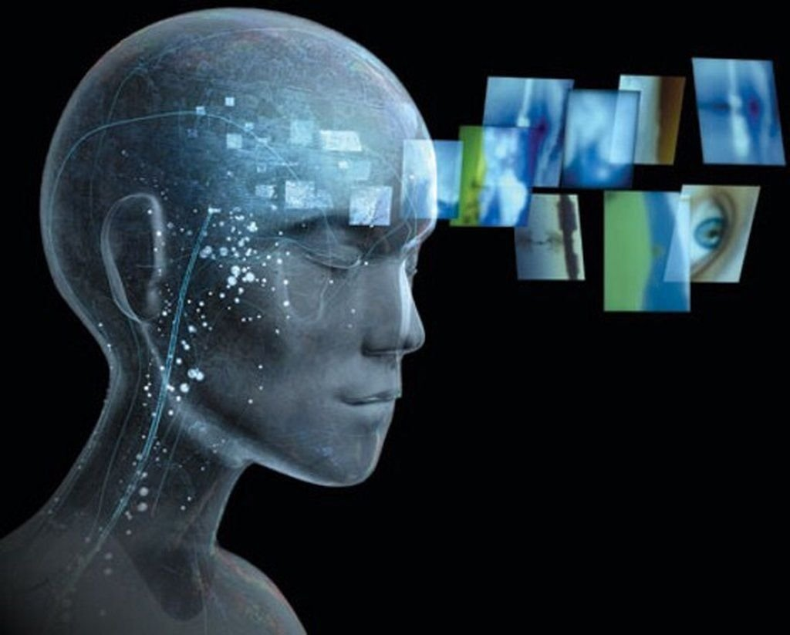
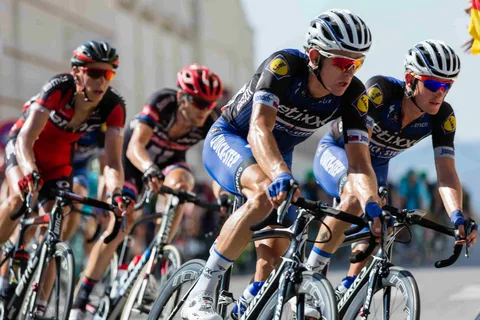
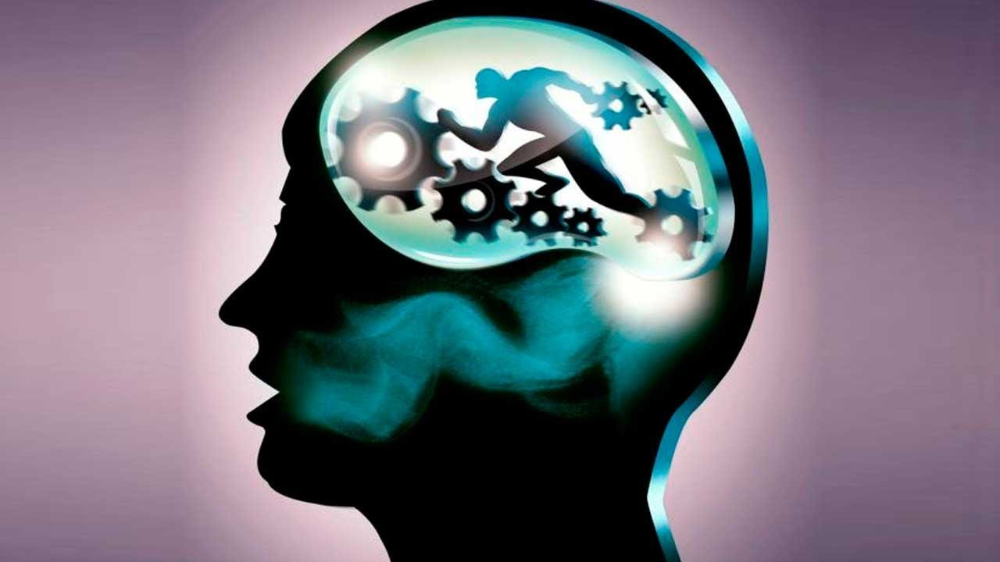
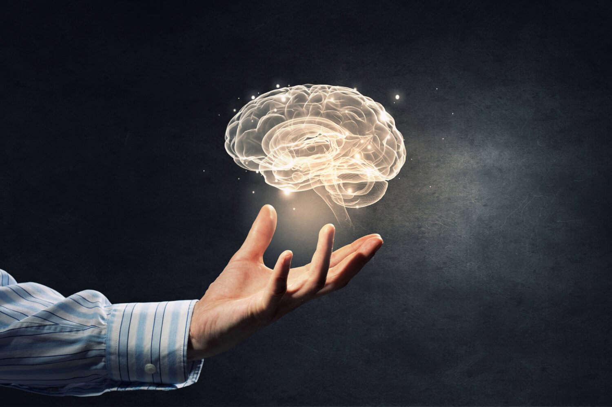
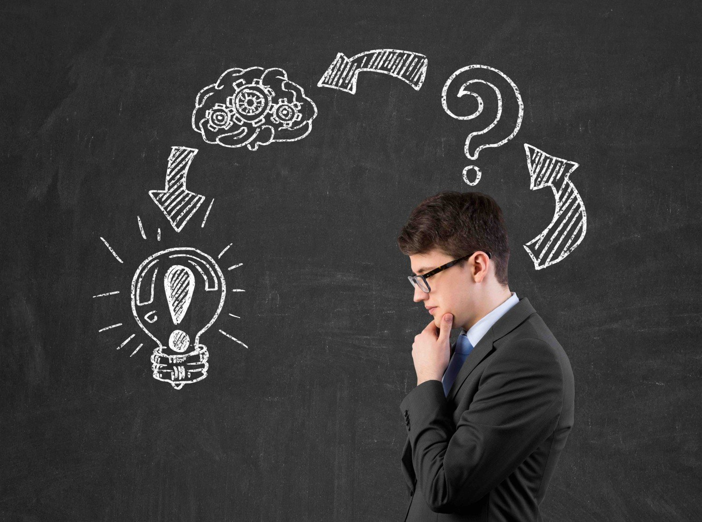
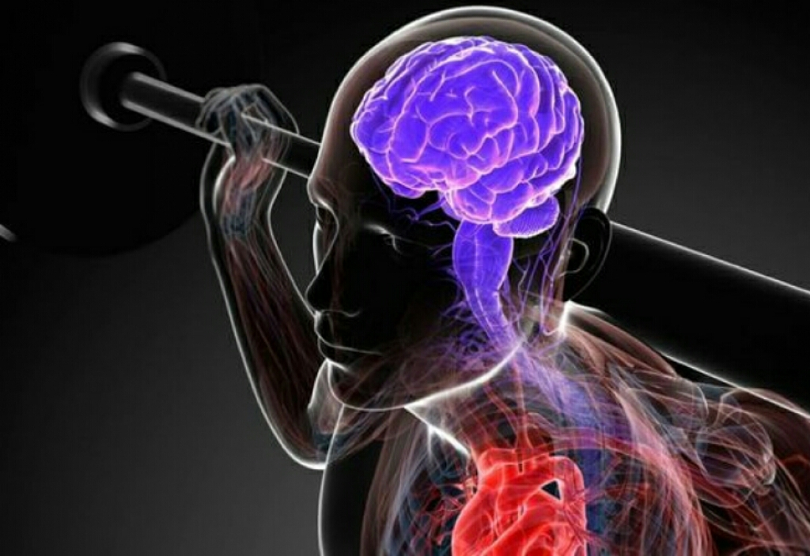

4. Основные свойства внимания, от которых зависит успех в обучении двигательным действиям:

5. Объем внимания определяется…
6. Концентрация внимания характеризуется...

7. Восприятием называется…

8. В обучении спортивным действиям наибольшее значение имеют восприятия…

9. Именно двигательная память служит основой для формирования различных двигательных навыков и умений. Верно ли данное утверждение?
10. Мышление - это…

11. Мышление опирается на…

12. При обучении двигательным действиям, человек чаще всего опирается на три главные мыслительные операции:
13. Успешное обучение двигательным действиям зависит от уровня проявления и развития всех психологических процессов:

14. Перечисленные выше психологические процессы развиваются и совершенствуются в ходе…
15. Качества, необходимые для для обучения всем видам деятельности, это целеустремленность, настойчивость и упорство, дисциплинированность. Это верное утверждение?